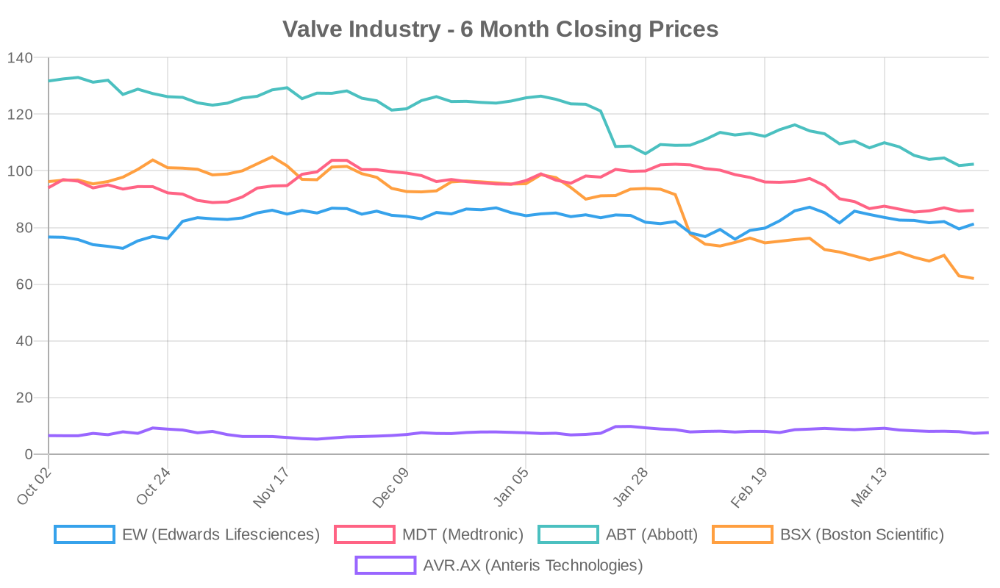
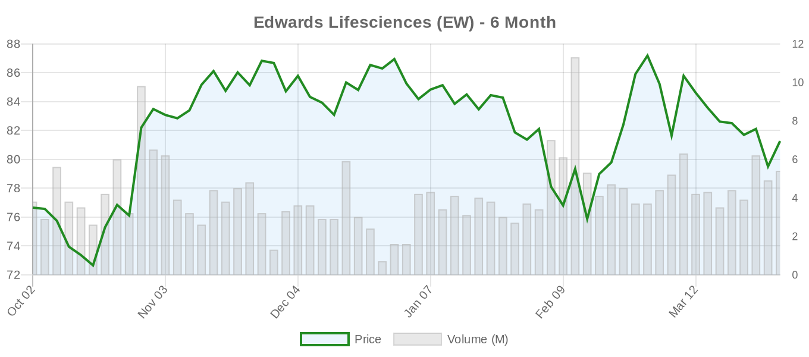
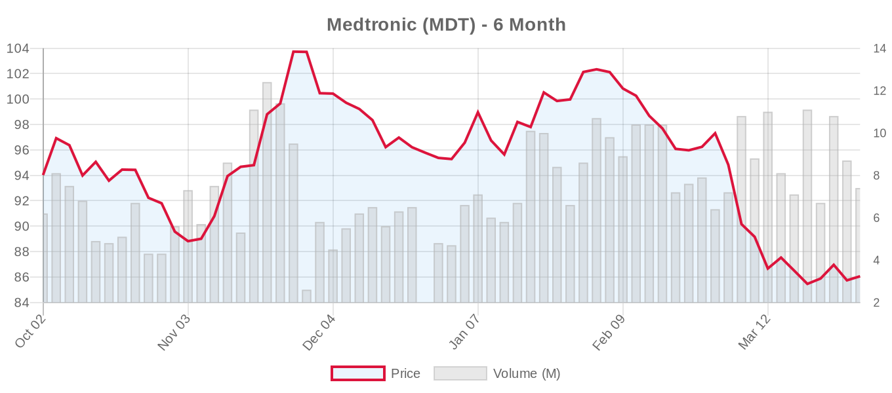
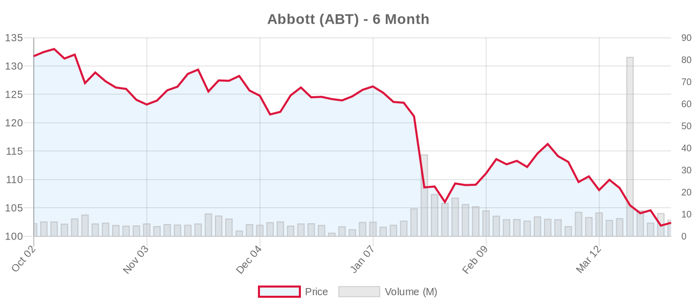
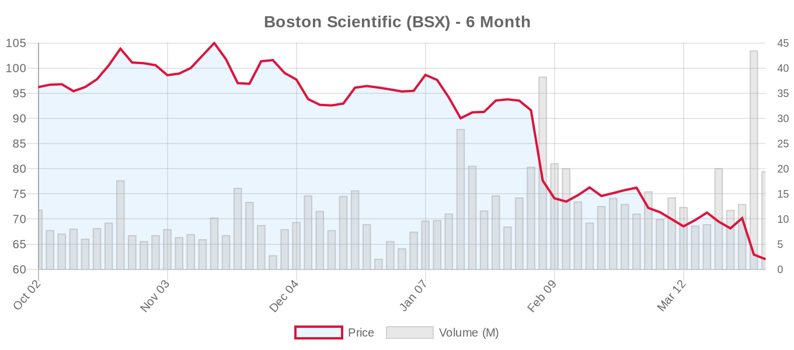

|
||||||||
|
April 02, 2026 By E. Nolan Beckett |
||||||||
|
||||||||
Executive SummaryMajor developments emerged from the ACC Scientific Sessions as new research suggests transcatheter aortic valve replacement (TAVR) may be safe for younger patients with chronic kidney disease, while embolic protection devices for TAVR face head-to-head comparison in the PROTECT H2H trial. VDYNE secured FDA approval to begin its TRIVITA1 pivotal trial for transcatheter tricuspid valve replacement, marking another milestone in the expanding tricuspid intervention space. Meanwhile, the landmark PRO-TAVI trial published in The Lancet demonstrated that deferring coronary intervention before TAVR is non-inferior to routine pre-procedural PCI, potentially simplifying patient management pathways. Today's research underscores the rapid evolution of transcatheter valve therapies, with investigators pushing boundaries in patient selection while simultaneously refining procedural approaches. The convergence of artificial intelligence applications in TAVR planning and the commercial launch of JenaValve's Trilogy system in the United States signals a maturing field embracing both technological sophistication and expanded treatment options. Today's Key Findings[NOTABLE] The PRO-TAVI trial, published in The Lancet and likely presented at ACC Scientific Sessions, represents a practice-changing finding for TAVR management. In 466 patients with coronary artery disease undergoing TAVR, deferring percutaneous coronary intervention was non-inferior to routine pre-procedural PCI for the composite endpoint of death, MI, stroke, and major bleeding at 1 year (24% vs 26%, p=0.0008 for non-inferiority). This challenges current practice patterns and could streamline TAVR workflows, though patient-tailored decisions remain essential. A real-world analysis of young adults with chronic kidney disease showed TAVR was associated with comparable mortality but reduced hospital stay and complications compared to surgical aortic valve replacement. Among 11,315 patients under age 65 with CKD, TAVR demonstrated lower rates of acute kidney injury, cardiogenic shock, and venous thromboembolism—findings that may influence treatment decisions in this high-risk population typically excluded from randomized trials. Aortic Valve (TAVR/TAVI)The PRO-TAVI trial findings challenge the routine practice of coronary revascularization before TAVR. This investigator-initiated Dutch multicenter study randomized 466 TAVR candidates with coronary artery disease to either defer PCI or undergo routine pre-procedural intervention. The primary composite endpoint occurred in 24% of the deferral group versus 26% of the routine PCI group, meeting non-inferiority criteria with a wide margin. This study represents level-1 evidence that may reshape pre-TAVR management protocols, though the authors emphasize that individualized decision-making remains crucial. A national analysis of young adults with chronic kidney disease undergoing aortic valve replacement revealed comparable in-hospital mortality between TAVR and SAVR, with TAVR showing advantages in length of stay and specific complications. Among patients under 65 with CKD, TAVR was associated with reduced acute kidney injury (a particularly relevant finding in this population), cardiogenic shock, and venous thromboembolism. However, durability concerns remain paramount in young patients, and the study's short-term follow-up limits definitive conclusions. Artificial intelligence applications in TAVR continue expanding, with a comprehensive review highlighting machine learning's superior performance in anatomical assessment and risk prediction compared to conventional approaches. The integration of explainable AI and federated learning promises enhanced accuracy in preoperative planning, though challenges in data acquisition, privacy, and model generalizability persist. JenaValve Technology announced the U.S. commercial launch of its Trilogy TAVR system, marking entry into the competitive American market. The system's unique positioning mechanism and potential advantages in challenging anatomies will face real-world validation against established platforms from Edwards, Medtronic, Abbott, and Boston Scientific. Mitral Valve (MitraClip, PASCAL, TMVR)A comprehensive review examining the evolution of clinical indications for mitral valve transcatheter edge-to-edge repair highlights the therapy's expansion beyond traditional boundaries. Current evidence supports M-TEER across an increasingly broad range of scenarios, including acute MR after myocardial infarction, hypertrophic obstructive cardiomyopathy, and mitral annulus calcification. The review emphasizes combined strategies, such as simultaneous mitral and tricuspid repair or M-TEER alongside TAVR and left atrial appendage closure, as practical approaches for high-risk patients. Notably, the analysis discusses M-TEER's emerging role in moderate MR, reflecting growing recognition that this intermediate stage carries adverse outcomes. This aligns with the ESC 2025 guidelines' expanded recommendations for TEER in secondary MR, though long-term outcome data remain crucial for definitive patient selection criteria. Tricuspid Valve (TriClip, TTVR)[NOTABLE] VDYNE received FDA approval to initiate the TRIVITA1 IDE pivotal trial for its transcatheter tricuspid valve replacement system. This milestone adds to the growing arsenal of tricuspid interventions, following successful trials with TriClip (TRILUMINATE) and Edwards' EVOQUE system (TRISCEND II). The competitive landscape in tricuspid replacement is intensifying, with multiple platforms seeking to address the significant unmet need in severe tricuspid regurgitation patients deemed too high-risk for surgery. Surgical vs. Transcatheter ComparisonsThe young CKD population analysis provides rare comparative data in patients typically excluded from randomized trials. While TAVR showed procedural advantages, the fundamental durability question looms large for patients under 65 who may outlive their transcatheter valves. This tension between short-term safety and long-term durability continues to define the SAVR vs. TAVR debate in younger populations, particularly as the ESC 2025 guidelines have lowered the TAVR preference threshold to age 70. Device & TechnologyEmbolic protection devices for TAVR are being directly compared in the PROTECT H2H trial, likely presented at ACC Scientific Sessions. This head-to-head comparison addresses a critical gap in understanding which embolic protection strategy offers superior cerebrovascular outcomes during TAVR procedures. A case report highlighted hydrophilic polymer embolism following TAVR, a rare but serious complication related to catheter device coatings. While cholesterol crystal embolism is well-recognized, polymer embolism requires early diagnosis and potential corticosteroid therapy, emphasizing the need for vigilance regarding device-related complications. Regulatory & PolicyThe Centers for Medicare & Medicaid Services issued a decision memo regarding TAVR coverage (CAG-00430R2), though specific details require further review to assess any changes in reimbursement criteria or coverage determinations. Valve Industry Stocks Edwards Lifesciences (EW)
Edwards outperformed the market today, benefiting from positive sentiment around TAVR innovation and the expanding tricuspid opportunity. The stock trades at a premium valuation reflecting its market leadership position, though execution on tricuspid replacement trials remains critical for sustained growth. Medtronic (MDT)
Medtronic continues to face headwinds despite its diversified portfolio. The company's structural heart division must compete against Edwards' TAVR dominance while advancing its own transcatheter platforms and tricuspid initiatives. Abbott (ABT)
Abbott's structural heart portfolio, anchored by MitraClip and TriClip, faces competitive pressures as the M-TEER market matures. The company's diverse healthcare platform provides stability, but execution in high-growth transcatheter segments remains crucial. Boston Scientific (BSX)
Boston Scientific has experienced the steepest decline among major valve players, despite strong analyst confidence reflected in the "Strong Buy" consensus. The company's structural heart initiatives, including TAVR development and transcatheter mitral programs, face intense competition. Anteris Technologies (AVR.AX)
The Australian valve technology company continues developing its biomimetic tissue platform, though commercial success remains uncertain in the competitive landscape. The structural heart industry faces a complex environment with established players defending market share while innovative technologies seek commercialization pathways. Edwards maintains leadership through continuous innovation, but competitive pressures from transcatheter mitral and tricuspid therapies create both opportunities and challenges across the sector. Clinical Trial UpdatesAortic Valve Trials:
Mitral Repair Trials:
Mitral Replacement Trials:
Tricuspid Repair Trials:
Tricuspid Replacement Trials:
The tricuspid space shows remarkable activity with VDYNE's FDA approval for TRIVITA1 adding to the competitive landscape alongside Edwards' EVOQUE and other emerging platforms. Meanwhile, mitral valve trials continue enrollment with the landmark REPAIR-MR and PRIMATY studies providing crucial data on optimal patient selection for transcatheter versus surgical approaches. Today's developments from ACC Scientific Sessions reinforce the rapid maturation of transcatheter valve therapies, with evidence supporting more conservative coronary management strategies while expanding treatment options across all valve positions. The convergence of AI-enhanced procedural planning and novel device platforms suggests continued innovation in this dynamic field. |
||||||||
|
|
||||||||
|
||||||||
|